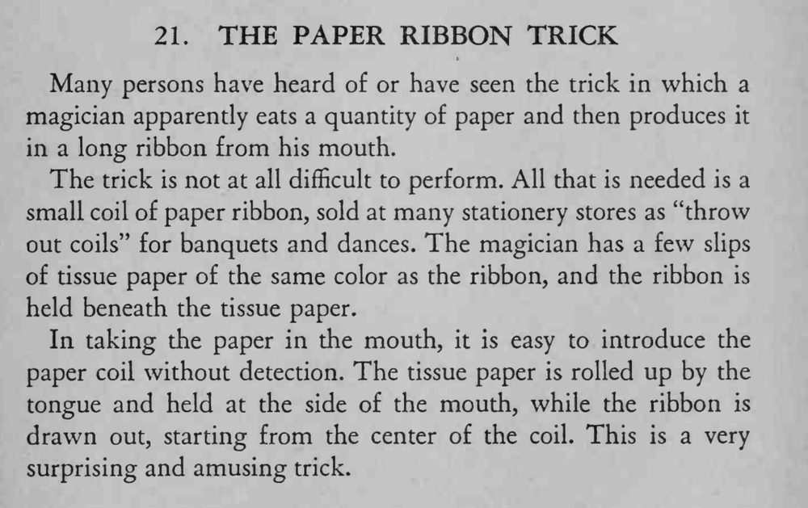

魔术师把纸「吃」下去，随后从嘴里拉出长长的纸彩带。
彩带卷要贴住薄纸一起送进嘴，拉的时候从中心开始才顺。

Many persons have heard of or have seen the trick in which a magician apparently eats a quantity of paper and then produces it in a long ribbon from his mouth. The trick is not at all difficult to perform. All that is needed is a small coil of paper ribbon, sold at many stationery stores as "throw out coils" for banquets and dances. The magician has a few slips of tissue paper of the same color as the ribbon, and the ribbon is held beneath the tissue paper. In taking the paper in the mouth, it is easy to introduce the paper coil without detection. The tissue paper is rolled up by the tongue and held at the side of the mouth, while the ribbon is drawn out, starting from the center of the coil. This is a very surprising and amusing trick.